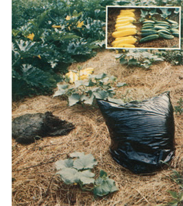

Early in the spring of 1977 - while experimenting with various ways to generate methane gas from decaying organic matter - I made an interesting discovery: It's possible (and outrageously easy) to produce a very convincing facsimile of cow manure . . . without a cow.
Now I'm quite aware that this wonderful invention of mine will probably rank somewhere down around hoof-and-mouth disease and warble flies with the beef and dairy farmers out there in MOTHER's vast readership. (Most of the cattle raisers I know spend more time thinking about how to get rid of cow manure than they do dreaming up ways to create it artificially.)
Then again, for every one beef or dairy farmer of my acquaintance . . . I can probably name 15 or 20 urban or suburban gardeners. Each of whom (unless they've been brainwashed by slick salesmen into paying even higher prices for chemical plant foods) regularly shells out several dollars per bag for dried and ground cow flops . . . which, after all, are only about the best natural fertilizer that anyone can spread on a vegetable patch. (Get the picture? Cow manure - either real or ersatz - is a valuable commodity, and the price - like all prices - is going up every day.)
The price, that is, continues to escalate if you're still forced to buy your natural fertilizer "straight from the cow" . . . a situation that I intend to rectify right now. Because, as I've learned, it's easier and far less expensive to recycle leaves, grass, and other organic material into a cow-manure-like plant food right in your own back yard by my method . . . than it is to keep a real cow around to handle the same job for you.
I stumbled onto my "secret", as I've mentioned, during a series of methane gas experiments. As you may know, this fuel (a close relative of natural gas) is produced when organic waste material of any kind-plant, animal, or human-is put into a sealed, airless (anaerobic) container-usually steel or concrete-and allowed to decompose. Although this process is understood reasonably well, there is still some controversy (at least among its grassroots practitioners) about just what organic waste materials-mixed together in just what proportions-will produce the optimum amounts of methane.
Which explains why the spring of 1977 found me dumping various combinations of torn-up weeds, grass clippings, shredded leaves, comfrey cuttings, chopped kudzu vines, artichoke and other vegetable clippings, etc., into a selection of large plastic garbage bags . . . which I then tied shut and left lying out in the hot sun to "cook".
Most of the mixtures of freshly cut organic matter contained enough natural juice to "heat up" and begin decomposing "as is". One bag (of grass clippings and shredded leaves), however, seemed a little too dry to start this natural action on its own, so I added a half-gallon of water.
I opened the sealed bags (all tagged for reference) every three days to check on the amount of methane that each "recipe" was producing. As expected, some formulas created more gas than others. So far, so good.
And then, a few days into the test, I began to notice something that I hadn't anticipated: The decomposing mass in most of the black plastic garbage sacks was beginning to turn into something
which strongly resembled horse or cattle manure ... including a certain amount of their characteristic smells.
To be more specific: Nine days after the experiment began, the contents of the opened bags exhibited a noticeable "silage" or "pickle acid" odor. One day later a distinct smell-not bad . . . but unfamiliar, musty, and vinegary-could be detected a full 50 feet from the sealed sacks. This aroma then slowly lost its potency as the various mixtures of decaying matter decomposed. By the time the test had run 21 to 30 days (depending on the recipe), all odors-from either the tied or opened bags-had completely disappeared.
At the end of the 21- to 30-day "cooking" period, the following results were noted: The bag of dry grass clippings and shredded leaves (which had been wet down enough to start a decaying action) had turned into a fairly conventional-looking compost. The sackfuls of naturally semi-moist organic material, on the other hand, resembled nothing so much as horse manure . . . and the really juicy formulations looked more like fresh cow manure than some real fresh cow manure I've seen!
This was so unexpected that I immediately duplicated the experiment several times . . . always with the same result. And, although I can't claim that my tests have been scientifically controlled in any way, I am sure of one thing: If you shred or chop or grind a mixture of weeds, grass clippings, comfrey (a member of the borage family often used for animal forage), kudzu (the fast-growing vine that has "taken over" parts of the rural South), a few artichoke plants, and any other naturally juicy "waste" vegetation you have on hand . . . add extra moisture if necessary . . . tie it all up in an airtight plastic garbage bag . . . and leave it lying out in the hot sun for a month . . . you'll wind up with a dead ringer for what the cows leave behind in the pasture.
And here's the really good news! My gardening experiments have convinced me that this artificial cow manure works at least as well in the vegetable patch as the real thing. In fact, I think it makes an even richer fertilizer and here's my reasoning:
A cow's digestive system-obviously-is designed to extract as many nutrients for the cow as possible from the mass of organic material which passes through it and eventually is expelled as manure. My plastic bag "digestive system", by contrast, turns everything that it contains (except for the few gases which escape) directly into "manure" . . . with no food values extracted.
And here's an added bonus: It's just one whale of a lot easier to make this artificial manure than it is to produce ordinary compost!
Furthermore, I know my ersatz manure can do the job in the garden. On May 25, 1977-for instance-I dug holes (four feet apart) for a row of Burpee's Golden Zucchini squash and a row of Straight Eight cucumbers. One large shovelful of the fertilizer was thoroughly mixed into the soil in each excavation and about five seeds were planted in every hill.
Once the seeds had sprouted and the plants were large enough to mulch, I tilled around them, laid down several layers of newspaper, and covered the paper with approximately six inches of hay. And that's about all the attention the squash and cucumbers got, except for normal watering.
Now I won't say that those plants jumped out of the ground . . . but they did grow amazingly fast (fast enough to convince me that no other fertilizer was necessary). Since this was a test, we held off gathering any of the burgeoning harvest as long as we could . . . but, by August 10, it was apparent that we'd better start picking the experimental vines fast while we still had a chance of keeping,ahead.
Squash, squash, squash! I'd never seen anything like those plants in my garden before. We ate, cooked, dried, canned, pickled, and gave away (even to the mailman!) more squash than I'd even guessed one row could produce. l began telling my wife that the only way to stop those vines from bearing was to pull them up! We finished the summer feeding squash to the chickens (the flock loved them).
It was the same with the cucumbers. We ate, canned, pickled, gave away, and filled the refrigerator with cukes. Finally, in desperation-when the vines had reached two rows over and started to strangle the sweet corn-we got out the machete and began chopping them back. For a while there I felt like a South American plantation owner fighting against the encroaching jungle.
With results like that under my belt, it's easy to see why I'm putting garbage bag manure on almost my entire garden this year . . . and, once again, making this fertilizer is far easier than trying to produce an equivalent amount of compost: I just use the lawn mower to chop up grass, leaves, and other organic material . . . mix everything together . . . dump it into garbage bags . . . and leave the tied sacks lying out in the sun. There's no backbreaking turning or lifting or forking or shoveling at all.
Although I've talked about tying shut my "airtight" black plastic bags throughout this article, I do want to point out that I never completely seal the sacks (if I did, they'd blow up and burst as the digesting material inside generates methane gas). I do tie the bags . . . but loosely enough to allow the forming gas to escape.
The importance of moisture and free solar radiation to the decomposition process outlined here should also be emphasized. It's the combination of moisture (from either the natural juices of the vegetation being composted or added water) plus the heat of the sun that those black bags soak up plus the almost complete exclusion of outside air which makes this method work so well. In short, don't expect to turn out batches of "genuine artificial cow manure" in 30 days unless you observe this simple ground rule.
And don't waste your time opening all your bags of decaying matter every three days the way that I did when my original batch of fertilizer was "cooking". Remember, I was running a methane experiment the first time that I brewed up artificial cow flops and I kept peeking in the way I did just to compare the gas production of one formulation to another.
Forget the methane. Let what little forms bleed off harmlessly into the atmosphere (the way it bubbles up out of swamps and escapes from real manure piles and real cows all the time). Just sack your shredded organic material, make sure it's moist enough, tie it loosely, throw it out in the sun, and forget it for 30 days (maybe 35 in some cases). Then open your goodies and spread'em on the garden.
A final tip: This plastic bag fertilizer-once digested-shares yet another desirable characteristic with "the real thing". Just like manure straight from the cow, it can be dried and stored for future use. (Which, of course, means that it's only a matter of time until someone starts producing it on a grand scale so he or she can dry and bag it for sale just like the dried and bagged cow droppings now available from gardening stores.)
So there you have it . . . my latest invention: The Incredible Roy Dycus Method of Converting Weeds, Kudzu Vines, Comfrey, Grass Clippings, and Other Juicy Waste Vegetation Into Cow Manure in the Privacy of Your Own Back Yard.
Sure, you can do the same thing "more naturally" by staking a real cow out there somewhere on the terrace. But it'll be messier. And you'll have to feed OI' Bossie all the time, instead of just when you want some fertilizer. And I don't think the finished product will be quite as good for your garden. And besides: A real cow will cost you a couple of hundred dollars . . . while my black plastic ones set me back only a few cents each!
|
 |
|
|